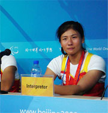

|
2008年9月11日，华南师范大学网络教育学院毕业生周杨静在2008北京第13届残奥会上取得赛艇TA级男女混合双人双桨固定座位1000米项目冠军。她和搭档单子龙以4分20秒69的成绩创造奇迹，为中国代表团夺得残奥会历史上的首枚赛艇金牌，也为广东籍运动员在残奥会上实现了金牌“零”的突破。
周杨静，中国赛艇队唯一的截肢运动员。两岁时，一场意外的交通事故，夺去了她的右腿。虽然肢体残疾，但这并没有妨碍从小爱动的周杨静对体育的热情。她曾经练过轮椅网球、轮椅击剑，在全国残疾人运动会上还拿过奖牌。体育增强了她的自信，让她走出封闭。2006年3月，中国残疾人赛艇队在广州成立。“能进入国家队，还有可能参加残奥会，我当时不知有多高兴”。从此，在残奥会上争取奖牌，便成了周杨静训练中最大的动力。每天8小时的训练成为周杨静的必修课。“由于训练量大，假肢经常会将大腿根部磨破，钻心的疼，”周杨静说，残肢还经常化脓溃烂，她只能用纱布垫上继续完成每天的训练课。
令人钦佩的是，在高强度的训练之余，周杨静还一直在坚持网络学习。她在2005年春季入读我院专升本行政管理专业。在读期间，周杨静十分珍惜网络学习机会，身残志坚，学习刻苦，成绩优越，于2008年春季修满学分，顺利毕业。无论是训练，还是学习，周杨静不屈的精神和顽强的毅力都非常值得我们学习。
华南师范大学自2002年开展现代远程教育以来，努力弘扬“教育帮扶”特色，累计招收各类残疾学员三百余人。华南师范大学网络教育学院和校外学习中心通力配合，利用现代信息技术为残疾学员提供了一系列特殊、周到的支持服务，帮助残疾人克服接受高等教育的障碍，满足了他们接受高等教育的需求，有效的促进了教育公平，为构建和谐社会贡献了力量。

【关闭】 |